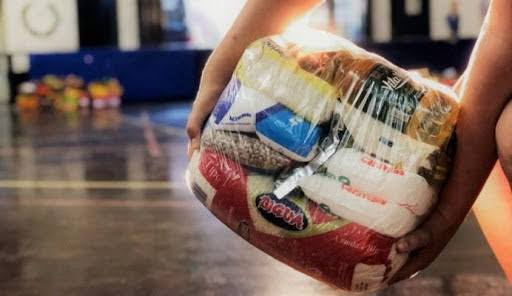
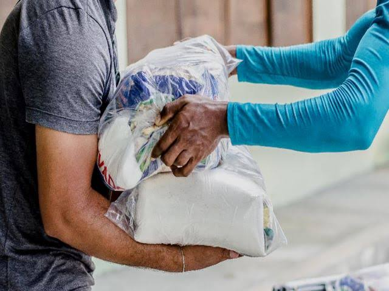
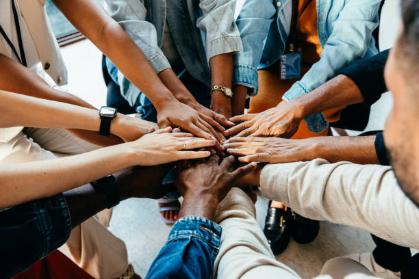

Inicio >
A ONG
A ONG
Transformando solidariedade em esperança

SOBRE NÓS
Nossa História
O Banco de Alimentos é uma organização sem fins lucrativos
dedicada a combater a fome e o desperdício de alimentos.
Desde a nossa fundação, trabalhamos para transformar o que seria
desperdiçado em refeições para quem mais precisa, conectando
doadores, empresas, agricultores e comunidades.

Missão
Buscar, arrecadar e distribuir alimentos
para pessoas em situação de vulnerabilidade
social, contribuindo para a segurança
alimentar e o desenvolvimento das comunidades.
Visão
Ser referência no combate à fome
e ao disperdício de alimentos,
reconhecida pela eficiência, transparência
e pelo impacto social positivo.
Valores
- Solidariedade
- Respeito às pessoas
- Ética e transparência
- Compromisso social
- Sustentabilidade
NOSSO IMPACTO
Juntos, fazemos a diferença
Cada doação, cada voluntário e cada projeto
representa uma vida impactada. Nosso trabalho
alimenta não apenas o corpo, mas também
a esperança de milhares de famílias.
25.430
refeições distribuídas
em 2026
8.240
famílias atendidas
1.250
voluntários
ativos
85
pontos de arrecadação
NOSSA EQUIPE
Pessoas que acreditam em um futuro melhor.
Nossa equipe é formada por profissionais dedicas
voluntários e parceiros que trabalham juntos para
tornar o combate à fome uma realidade.

Tire suas dúvidas
Você pode contribuir com alimentos não perecíveis e ajudar famílias em situação de vulnerabilidade.
Entre em contato conosco para conhecer nossas oportunidades de voluntariado.